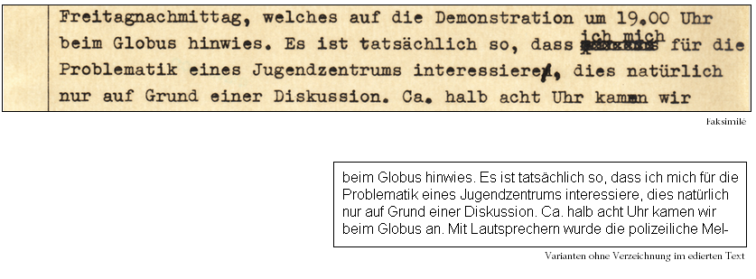
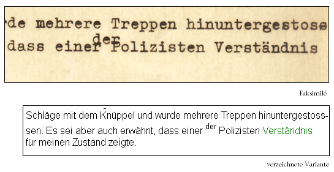
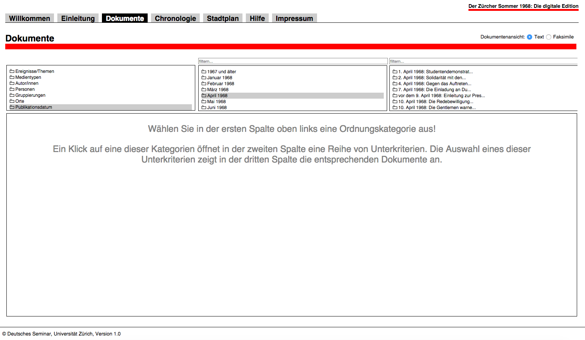
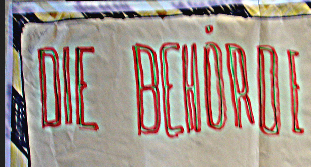

Der Zürcher Sommer 1968: Die digitale Edition
Table of Contents
Abstract
Der Zürcher Sommer 1968 is a digital edition of the events in the late summer 1968. The edition is hosted by the University of Zurich. For the first time, various documents such as newspaper articles, wall newspapers, protocols of interrogation and other written sources are gathered in one edition. The review discusses the purposes and flaws of an edition created by computer linguists from the perspective of editorial studies.
Besprechung
Der ‘Zürcher Sommer 1968: Die digitale Edition’ ist das Ergebnis eines an der Universität Zürich angesiedelten Projekts, das aus den Mitteln des Jubiläumsfonds der Universität finanziell gefördert und 2008 abgeschlossen wurde. Die Edition wurde im selben Jahr zusätzlich als Buch mit CD-Rom-Beilage (Linke–Scharloth) von Angelika Linke und Joachim Scharloth herausgegeben. Der ‘Zürcher Sommer 1968’ ist Bestandteil der Corpora for Social Movement Research (COSMOV) der Universität Zürich, eines korpuslinguistischen Forschungsprojekts mit mehreren Teilprojekten.
Technisch umgesetzt und im Internet bereit gestellt wurde das Projekt von Mitherausgeber Joachim Scharloth und Projektmitarbeiter Noah Bubenhauer. Beide sind zugleich Begründer der ‘Forschergruppe’ semtracks, einer GmbH, die Dienstleistungen im Bereich 'language technology and semantic consulting' anbietet (Semtracks GmbH Startseite). Semtracks selbst versucht, ‘die wachsende Informationsflut’ linguistischer Textressourcen durch Text Mining, Dokumenten-Clustering und Sediment Analyse zu erfassen und erschließbar zu machen (vgl. Semtracks GmbH Forschung).
Projektbeschreibungen, die jeweiligen Verantwortlichen sowie Kontaktinformationen sind leider nicht zentral versammelt und müssen auf unterschiedlichen und unübersichtlich verlinkten Seiten zusammengesucht werden. Dies erschwert dem Nutzer auch die Unterscheidung der einzelnen Arbeitsgruppen und Zuständigkeitsbereiche von semtracks und der Edition.
Die am ‚Zürcher Sommer‘ und an semtracks beteiligten Projektmitarbeiter kommen aus dem Bereich der (Computer-)Linguistik, wollen allerdings auch Inhalte anbieten, die geschichtswissenschaftliche Themenfelder betreffen und daher außerhalb ihres eigenen Forschungsfokus liegen, wie nachfolgend zu sehen sein wird.
Zielsetzung
Die Fragestellung verfolgend, warum und wie es im Frühjahr und Sommer 1968 in Zürich erstmalig zu Ausschreitungen in größerem Umfang kam, wurden insgesamt über 900 zeitgenössische Quellen zur Geschichte der Jugendunruhen in einem lokal begrenzten Kulturraum als digitalisierte Volltexte mit den jeweiligen Faksimiles vorgelegt. Einige von ihnen wurden erstmalig der Öffentlichkeit zugänglich gemacht. Um die Bewegung aus verschiedenen Blickwinkeln zu beleuchten, wurden nicht nur Texte (z.B. Flugblätter, Wandplakate, Briefe) der unmittelbar beteiligten Akteure, sondern darüber hinaus auch Begleitmaterialien (z.B. Polizeiakten aus dem Züricher Staatsarchiv, Zeitungsberichte, Fotos) präsentiert. Die Edition kann daher als durchaus wertvolle Materialgrundlage für unterschiedliche Forschungsfragen dienen.
Gleichwohl sind einige inhaltliche sowie technische Mängel festzustellen. So bleibt beispielsweise eine Kontextualisierung der historischen Dokumente aus: Die kritische Einordnung der Texte in die allgemeine Protestkultur der 68er Jahre findet in der Ausgabe nicht statt. Auch wären diesbezügliche Hinweise zu weiterführender Literatur wünschenswert gewesen, sowohl für den Fachwissenschaftler als auch für den Laien. Eine solche Bibliographie wäre zumindest ein – wenn auch schwaches – Substitut für die fehlende Kontextualisierung. Scharloth und Linke begründen ihr Vorgehen damit, dass lokalspezifische Besonderheiten nicht 'verwischt' werden sollen (Scharloth–Linke). Warum das Projekt den Fokus darauf verlieren würde, wird jedoch nicht erklärt. Vielmehr erachtet Scharloth eine solche Einordnung als prinzipiell sinnvoll und fruchtbar für zukünftige Forschungsarbeiten.
Textgrundlage
Im Sinne von COSMOV stellt das Projekt ein korpuslinguistisch aufbereitetes Textarchiv zur Verfügung (Semtracks GmbH Corpora). Als Textgrundlage für die Edition dienen ausschließlich schriftlich fixierte Texte bzw. aufgezeichnete mündliche Äußerungen (vgl. COSMOV Korpora). Dem Stand der Digitalisierung ist es wohl geschuldet, dass zeitgenössische Audio- und Videoaufnahmen noch nicht eingebunden werden konnten.
Kommentierung und Kontextmaterial
Da primär eine Materialsammlung geschaffen werden sollte, wurde auch die Ausarbeitung einer historisch-kritischen Kommentierung und Annotation nicht angestrebt. Eine entsprechende Stellungnahme hierzu lässt sich allerdings nicht finden. Der Einzelstellenkommentar in der Edition macht nur die notwendigsten Angaben wie z.B. eine Anmerkung zu typographischen Gegebenheiten des jeweiligen Dokuments, gibt aber keine näheren inhaltlichen Erläuterungen. Die Kommentierung entspricht daher eher einer archivalischen Beschreibung.
Die ‘Einleitung’ gleicht eher einem Vorwort und bietet keine Informationen zum editorischen Vorgehen. An anderer Stelle deklarieren die Herausgeber die Edition überwiegend, wenn auch nicht einheitlich, als ‘Dokumentation’. Es finden sich auch die Bezeichnungen ‘Quellenedition’ (Bubenhofer–Haaf–Jourdain 1) und ‘Edition von Dokumenten’ (Semtracks Gmbh Editionen). Wiederum an anderer Stelle wird hinsichtlich des Anzeigemodus behauptet, es könne ‘[...] nach Interesse [...] zwischen Faksimile-Ansicht, Lesetext und historisch-kritischer Edition und weiteren Zwischenstufen’ (COSMOV Edition Zürich 1968) gewählt werden – je nach den spezifischen Bedürfnissen der Nutzergruppen.
Variantenverzeichnung


Navigation
Die Navigationszeile befindet sich am Kopf der Seite, ist übersichtlich gestaltet und selbsterklärend. Auch eine Hilfefunktion wird dazu angeboten. Der Zugang zu den Dokumenten erfolgt über die Navigation: nach Publikationsmedium, namhaften Akteuren, Gruppierungen, Ereignissen, Autoren, Publikationsdatum, Schlagworten und Orten. Die Dokumente werden dann im Hauptfenster angezeigt.

Die chronologische Darstellung mit Einbindung eines Zeitstrahls sowie eine interaktive Karte macht die Anwendung insgesamt nutzerfreundlich und ermöglicht alternative Zugänge zu den Dokumenten. Nähere Informationen zu den Dokumenten erhält der Nutzer – allerdings nicht gebündelt – zudem über die ‘Chronologie’ in der Navigation mit Verweis auf die betreffenden Dokumente. Jedoch existieren keine Backlinks von den Dokumenten auf diese kurze Erläuterung. Eine die Navigation ergänzende Volltextsuche wird leider nicht angeboten, da sie ‘aus technischen Gründen nicht in einer lokal im Browser lauffähigen Applikation realisiert werden’ konnte(Bubenhofer–Haaf–Jourdain 77).
Die Navigation erfüllt weitgehend die Funktion eines Registers. Da aber nur namhafte Akteure der Bewegung als Personen verschlagwortet wurden, ersetzt diese Funktion keine Personenliste. Wünschenswert wäre eine Verschlagwortung gewesen, wie es sie auch hinsichtlich der Verknüpfung der Ortsnamen gibt – nämlich ebenfalls über ein Pop-up – mit einer Karte und der entsprechenden Hervorhebung, über die der Nutzer auf weitere Verweise zu den entsprechenden Orten weitergeleitet wird. Eine Verknüpfung von Dokumenten zu Ereignissen findet im Text nicht statt. Stattdessen muss den Verweisen in der Chronologie gefolgt werden, von der aus der Nutzer wiederum Zugriff auf eine Sammlung von Dokumenten zum betreffenden Ereignis erhält. Den unter der Rubrik 'Hilfe‘ versteckten Hinweis 'Die Annotation der Dokumente mit Informationen zu Personen, Gruppen und Orten geschah halbautomatisch und ist deshalb nicht fehlerfrei' wird der Nutzer nur alsbald bestätigen können.
Der eingeschlagene Browsing-Pfad der Navigation bleibt auch während der Ansicht der Dokumente stets sichtbar. Nach Aufrufen eines Dokuments kann der Anzeigemodus in einem Pop-up als historisch-kritische Edition und durch Anwählen oder Ausblenden von Schriftformatierungs- und Apparatoptionen bis zum reinen Lesetext den jeweiligen Nutzerbedürfnissen angepasst werden. Wie bereits erwähnt, funktioniert das Ein- und Ausblenden jedoch nicht in allen Fällen. In einem weiteren Pop-up finden sich die Verweise zu den Faksimiles, die sich nach dem Aufruf in einem neuen Fenster öffnen. Eine synoptische Darstellungsweise wird leider nicht geboten.
Faksimilierung

Archivalische Verzeichnung
Die Dokumente sind im Kopf jeweils mit Apparaten ausgestattet, die bibliographische und archivalische Angaben bereitstellen. Hier finden sich auch Informationen zu den Bearbeitern und weitere Metadaten wie Verfasser, Erscheinungsdatum und -ort, Adressaten und Inhaltsverschlagwortung, aber auch Angaben zum Material der Dokumente. Bisweilen finden sich diese Angaben auch alternativ in Einzelstellenkommentareinträgen.
Grundsätzlich ist zu bemängeln, dass die Beschreibung der Dokumente inkonsistent und unvollständig bleibt. Weder im Kommentar noch im Apparat wird beispielsweise der Gebrauch von Sütterlin anstatt der üblichen lateinischen Schreibschrift erfasst, obwohl die Wahl und Kontextualisierung der Schrift aus kulturhistorischer Perspektive möglicherweise für diesbezügliche Forschungsfragen von Relevanz wäre. Ähnliches gilt für die in den Quellen genannten Beilagen (vgl. Zürcher Sommer Startseite). Sie sind weder in Einzelstellenkommentaren noch im Apparat/Header aufgeschlüsselt oder als Kontextmaterialien aufgeführt.
Codierung und Archivierung
Eine Pflege der Daten scheint in den sechs Jahren, seit denen sich die Edition auf den Servern der Universität Zürich befindet, nicht stattgefunden zu haben. Die Transkriptionen sowie ein Großteil der Faksimiles sind noch einsehbar. Nur wenige Scans (wie z.B. Faksimile GK_1079_SH13, verlinkt von Zürcher Sommer GK_1079_SH) sind nicht mehr verfügbar.
Die Edition nutzt Standardtechnologien wie HTML4, XML, CSS und JavaScript. Die Codierung selbst ist nicht dokumentiert. Aus dem Seitenquelltext ist ersichtlich, dass die Daten mit XML nach den Richtlinien der TEI codiert und laut Werkstattbericht mit XSL, im Fall von 'besonders rechenintensiven' Prozessen aus Zeitgründen auch mit Perl und regulären Ausdrücken (Bubenhofer–Haaf–Jourdain 91), transformiert wurden.
Die Einbettung des Contents erfolgt über einen Inlineframe auf der Hauptseite. Diese Verschachtelung führt leider auch dazu, dass die einzelnen Inhaltsseiten nicht direkt referenzierbar sind. Dafür muss erst der Inlineframe von der Hauptseite gelöst und die Einzelseite ohne Einbettung angezeigt werden. Dies hat zur Folge, dass der Nutzer nicht mehr auf die Navigation zugreifen kann und die einzelnen Dokumente nur schwer zitierbar sind (vgl. Zürcher Sommer EH_1118_TG).
Nachahmung von Typographie und Layout
Der Anspruch, den die Herausgeber an die Edition stellten, ist die Bereitstellung möglichst authentischer und uninterpretierter Texte. So wird auch das Ziel formuliert, ‘die typographischen und graphischen Spezifika der 1960er Jahre so authentisch wie möglich’ nachzubilden (Zürcher Sommer Einleitung). Diese Maßgabe wird allerdings nicht immer befolgt. So werden beispielsweise die Rahmenlinien von Formularen nicht nachgezeichnet (z.B. Zürcher Sommer EH_1101_TG_11).
An anderen Stellen geschieht die Nachbildung nicht immer auf elegante Weise: Das Layout ist insbesondere dort verzerrt, wo Textteile zentriert sind, was bei höherer Bildschirmauflösung zu einer Verschiebung der Textelemente und des Satzes führt. Auch wurde die typographische Nachgestaltung des Layouts nicht auf alle Formulare angewandt, wobei sich nicht feststellen lässt, nach welchen Kriterien dies entschieden wurde. Vor diesem Hintergrund bleibt unverständlich, warum nicht auch beispielsweise Zeitungsartikel in ihrer spezifischen Form dargeboten werden. Anstelle des gattungstypischen Blocksatzes finden sich, selbst wenn der Zeilenfall beachtet wurde, linksbündige Ausrichtungen.
Fazit
Die Edition hat ihr Ziel erreicht, circa tausend Dokumente zur Zürcher 68er-Bewegung zugänglich und linguistisch erschließbar zu machen. Während in der digitalen Edition ein Zugang zu den Dokumenten über Stichworte realisiert ist, sollen die lemmatisierten Volltexte Grundlage für eine Korpusanalyse auf den Webservern von semtracks werden. Ob und wie eine Integration in dieses Korpus tatsächlich erfolgt ist, kann allerdings nicht beurteilt werden, da dieses auch nach mehreren Versuchen zu unterschiedlichen Zeitpunkten nicht aufrufbar war.
Die Umsetzung des Ansatzes, die Dokumente auch für andere Zielgruppen zugänglich zu machen, ist jedoch weniger gelungen. Dies hätte durch den Abbau von Wissensbarrieren mittels einer inhaltlichen Kommentierung erreicht werden können.
Im historisch-kritischen Modus der Textpräsentation wurden Schriftformatierungen kenntlich gemacht und Platzhalter anstelle der Bilder des Originals verwendet, die den Lesefluss kaum beeinträchtigen. In der Lesefassung wird der Zeilenfall des Originals, Schriftarten und andere Phänomene unterdrückt, können aber bei Bedarf hinzugeschaltet werden.
Überdies sind Probleme zu verzeichnen, die eine historisch-kritische Edition vermeiden muss. Eine methodisch transparente und konsistente Arbeitsweise kann weder im technischen noch im editorischen Bereich festgestellt werden: für den technischen Bereich fehlt die Offenlegung der Auszeichnungsregeln, wünschenswert wäre auch die Bereitstellung des Schemas und des XML-Quelltextes. Für den editorischen Bereich fehlen jedenfalls die editorischen Richtlinien, wünschenswert wäre auch ein Sachkommentar gewesen.
Es bleibt also festzustellen, dass die eng gesteckten Ziele, nämlich die Verschlagwortung der Dokumente für die linguistische Analyse sowie ‘die Grundlage für eine differenzierte Auseinandersetzung mit der Zürcher 68er-Bewegung [zu] liefern und die Besonderheit des Zürcher Sommers 1968 sichtbar [zu] machen’ (Zürcher Sommer Einleitung) erfüllt sind. Mehr Hilfestellungen als eine Navigation durch die Dokumente nach verschiedenen Kriterien wie Ort, Zeit, Personen und Medium bietet die Edition jedoch nicht. Die Materialsammlung ist in diesem Sinne eher als eine Art ‘dokumentarische’ denn als historisch-kritische Edition zu bezeichnen. Damit stellt sie dennoch eine wertvolle Grundlage für weiterführende Forschungen dar.
Bibliography
- Linke, Angelika and Joachim Scharloth, eds. Der Zürcher Sommer 1968. Zwischen Krawall, Utopie und Bürgersinn. Zürich: NZZ libro, 2008.
- Bubenhofer, Noah, Susanne Haaf, Céline Jourdain et al. „XML-Technologien als Grundlage dynamischer Textpräsentation. Die digitale Quellenedition 'Der Zürcher Sommer 1968'“. Jahrbuch für Computerphilologie (2007). http://web.archive.org/web/20140408144915/http://computerphilologie.tu-darmstadt.de/jg07/bubenh.html.
- COSMOV. Startseite. http://web.archive.org/web/20140408143541/https://www.uzh.ch/cosmov/.
- COSMOV. Edition Zürich 1968. http://web.archive.org/web/20140408142402/http://www.cosmov.uzh.ch/edition68.html.
- COSMOV. Korpora. http://web.archive.org/web/20141207114442/http://www.cosmov.uzh.ch/korpora.html.
- Der Zürcher Sommer. EH_1118_TG. Accessed: 10.11.2014. https://www.uzh.ch/cosmov/edition/ssl-dir/V4/XML-Files/XML/EH_1118_TG.xml.
- Der Zürcher Sommer. EH_1101_TG_11. http://web.archive.org/web/20141110210710/https://www.uzh.ch/cosmov/edition/ssl-dir/V4/XML-Files/Scans/EH_1101_TG_11.jpg.
- Der Zürcher Sommer. GK_1079_SH. Accessed: 13.11.2014. https://www.uzh.ch/cosmov/edition/ssl-dir/V4/XML-Files/XML/GK_1179_SH.xml.
- Der Zürcher Sommer. Einleitung. http://web.archive.org/web/20140408150714/https://www.uzh.ch/cosmov/edition/ssl-dir/V4/einleitung.html.
- Der Zürcher Sommer. Hilfe. http://web.archive.org/web/20141112123155/https://www.uzh.ch/cosmov/edition/ssl-dir/V4/hilfe.html.
- Der Zürcher Sommer. Impressum. http://web.archive.org/web/20140408144057/https://www.uzh.ch/cosmov/edition/ssl-dir/V4/impressum.html.
- Der Zürcher Sommer. Startseite. http://web.archive.org/web/20141207114721/https://www.uzh.ch/cosmov/edition/ssl-dir/V4/willkommen.html.
- Scharloth, Joachim and Angelika Linke. Der Zürcher Sommer 1968. Ein Vorwort zu Buch und digitaler Edition. http://web.archive.org/web/20140408144317/http://www.scharloth.com/zuerich68/zuerich68einleitung.htm.
- Semtracks GmbH. Corpora. http://web.archive.org/web/20140408150350/http://www.semtracks.org/web/index.php?id=semtracks%20Corpora.
- Semtracks GmbH. Cosmov. http://web.archive.org/web/20140408153159/http://www.semtracks.org/cosmov/.
- Semtracks GmbH. Editionen. http://web.archive.org/web/20130816044223/http://www.semtracks.com/web/index.php?id=produkte&id2=digitale%20editionen&level=1.
- Semtracks GmbH. Forschung. http://web.archive.org/web/20140626150701/http://www.semtracks.com/web/index.php?id=forschung.
- Semtracks GmbH. Startseite. http://web.archive.org/web/20130618184818/http://semtracks.com/.
Notes
- Als Variante wird hier eine punktuelle Abweichung einer Textfassung/-stufe von einer anderen verstanden, so dass jede Änderung eine Variante darstellt. Im Gegensatz dazu impliziert eine Korrektur, dass der vorherige Textzustand unvollkommen war, was nicht unbedingt der Fall sein muss. Eine Textstufe bildet einen Text zu einem bestimmten Zeitpunkt ab und ist damit die Summe aller Änderungen bis zu diesem Zeitpunkt. Eine Variante und auch mehrere Textstufen können damit also durchaus auf einem einzigen Textträger auftreten. ↑
- Der Lesemodus und der kommentierte Modus stellen solche Fälle unterschiedlich dar. Im Lesemodus befindet sich lediglich die Transkription, so dass sich beispielsweise eine Äußerung in einer Sprechblase ohne ein Faksimile oder die Einblendung der kommentierten Fassung nicht erschließt. In der kommentierten Fassung findet man an dieser Stelle einen einfachen Platzhalter mit einer kurzen Beschreibung des Objekts. ↑
@article{zuercher_sommer,
author = {Wein, Friederike},
title = {Der Zürcher Sommer 1968: Die digitale Edition},
journal = {RIDE – A review journal for digital editions and resources},
number = {2},
year = {2014},
doi = {10.18716/ride.a.2.2},
url = {https://doi.org/10.18716/ride.a.2.2},
}TY - JOUR
AU - Wein, Friederike
TI - Der Zürcher Sommer 1968: Die digitale Edition
T2 - RIDE – A review journal for digital editions and resources
IS - 2
PY - 2014
DA - 2014/12
DO - 10.18716/ride.a.2.2
UR - https://doi.org/10.18716/ride.a.2.2
PB - Institut für Dokumentologie und Editorik e.V.
LA - de
ER - Wein, F. (2014). Der Zürcher Sommer 1968: Die digitale Edition. RIDE – A review journal for digital editions and resources, (2). https://doi.org/10.18716/ride.a.2.2Wein, Friederike. "Der Zürcher Sommer 1968: Die digitale Edition." RIDE – A review journal for digital editions and resources, no. 2, 2014. https://doi.org/10.18716/ride.a.2.2.Wein, Friederike. "Der Zürcher Sommer 1968: Die digitale Edition." RIDE – A review journal for digital editions and resources, no. 2 (2014). https://doi.org/10.18716/ride.a.2.2.